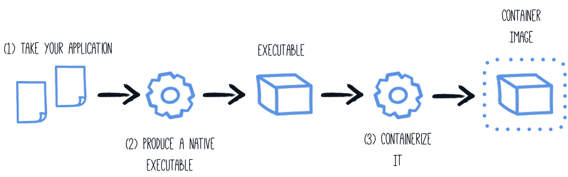

Quarkus - Building a Native Executable
このガイドでは以下をカバーしています:
-
アプリケーションをネイティブ実行ファイルにコンパイル
-
ネイティブ実行ファイルのコンテナーへのパッケージング
-
ネイティブ実行ファイルのデバッグ
このガイドは、 入門ガイド で開発されたアプリケーションを入力としています。
GraalVM
ネイティブな実行可能ファイルをビルドするには、GraalVM のディストリビューションを使用する必要があります。ディストリビューションは3つあります。Oracle GraalVM Community Edition (CE)、Oracle GraalVM Enterprise Edition (EE)、そして Mandrel です。Oracle ディストリビューションと Mandrel ディストリビューションの違いは以下の通りです。
-
Mandrelは、Oracle GraalVM CEのダウンストリームディストリビューションです。Mandrelの主な目的は、Quarkusをサポートするために特別に設計されたネイティブ実行可能ファイルを構築する方法を提供することです。
-
Mandrel のリリースは、アップストリームのOracle GraalVM CEコードベースから派生したコードベースから構築されており、わずかな変更しか行われていませんが、Quarkusネイティブアプリには必要ない重要な除外事項がいくつかあります。これらのリリースは、Oracle GraalVM CEと同じ機能をサポートしており、機能に大きな変更はありません。特筆すべきは、多言語プログラミングのサポートが含まれていないことです。これらの除外の理由は、大多数のQuarkusユーザーにより良いレベルのサポートを提供するためです。また、これらの除外は、Oracle GraalVM CE/EEと比較して、Mandrelの配布サイズが大幅に縮小されていることを意味しています。
-
Mandrelは、標準のOpenJDKプロジェクトを使用して、Oracle GraalVM CEとは少し違った形で構築されています。これは、Oracleが独自のGraalVMダウンロードを構築するために使用するOpenJDKのバージョンに追加したいくつかの小さなエクステンションから利益を得られないことを意味します。アップストリームのOpenJDKはそれらを管理しておらず、保証することができないため、このような機能強化は省略されています。これは、規格適合性とセキュリティーに関しては特に重要です。
-
Mandrelは現在のところ、Linuxのコンテナー化された環境をターゲットとしたネイティブ実行ファイルの構築にのみ推奨されています。つまり、Mandrelユーザーはコンテナーを使用してネイティブ実行ファイルを構築する必要があります。もしmacOSやWindowsをターゲットにしたプラットフォーム用のネイティブ実行ファイルをビルドする場合、Mandrelは現在これらのプラットフォームをターゲットにしていないため、代わりにOracle GraalVMを使用することを検討すべきです。ベアメタルのLinux上で直接ネイティブ実行ファイルをビルドすることも可能ですが、詳細は rel READMEと Mandrelのリリースに記載されています。
前提条件は、Oracle GraalVM CE/EEを使用しているか、Mandrelを使用しているかによって若干異なります。
|
Java 11 バージョンのGraalVMをインストールします。
Oracle GraalVM はJava 8とJava 11の両方に対して存在しますが (Mandrel はJava 11のみをサポート)、Quarkus Java 11でのみ動作します。Oracleのディストリビューションを使用する場合は、Java 11をインストールするようにしてください。 |
Prerequisites for Oracle GraalVM CE/EE
このガイドを完成させるには、以下が必要です:
-
less than 15 minutes
-
IDE
-
JDK 11 がインストールされ、
JAVA_HOMEが適切に設定されていること -
GraalVM のバージョン 20.3.1 (必ずJava 11 のサポートをインストールしてください)がインストールされ、 #configuring-graalvm[適切に設定されていること]
-
動作するコンテナーランタイム(Docker, podman)
-
入門ガイドで開発したアプリケーションのコード
|
Supporting native compilation in C
動作するC言語の開発環境があるとはどういう意味でしょうか?
|
Configuring GraalVM
|
GraalVMをインストールできない場合は、マルチステージのDockerビルドを使用して、GraalVMを含むDockerコンテナー内でMavenを実行することができます。このガイドの最後にこれを行う方法の説明があります。 |
Version 20.3.1 が必要です。コミュニティエディションで大丈夫です。
-
まだの場合は、GraalVM(のJava 11バージョン)をインストールしてください。いくつかポイントがあります:
-
適切なコミュニティエディションのアーカイブを https://github.com/graalvm/graalvm-ce-builds/releases からダウンロードし、他のJDK同様に解凍して下さい。Java 11バージョンをダウンロードしてインストールするようにして下さい。
-
ランタイム環境を構成します。
GRAALVM_HOME環境変数をGraalVMインストールディレクトリーに設定します。例えば、export GRAALVM_HOME=$HOME/Development/graalvm/macOSでは、変数を
Homeサブディレクトリーに指定します:export GRAALVM_HOME=$HOME/Development/graalvm/Contents/Home/Windowsでは、コントロールパネルから環境変数を設定する必要があります。
scoop でインストールすれば自動的に設定されます。
-
gu installを使用してnative-imageツールをインストールします。${GRAALVM_HOME}/bin/gu install native-imageGraalVMの以前のリリースでは、デフォルトで
native-imageツールが含まれていました。現在はそのようになっておらず、GraalVM自体をインストールした後の第二ステップとしてインストールする必要があります。注意: #graal-and-catalina[macOS CatalinaでGraalVMを使用する]際に、未解決の問題が発生しています。 -
(オプション) 環境変数
JAVA_HOMEを GraalVM のインストールディレクトリーに設定します。export JAVA_HOME=${GRAALVM_HOME} -
(オプション) GraalVM
binディレクトリーをパスに追加します。export PATH=${GRAALVM_HOME}/bin:$PATH
|
macOS CatalinaでGraalVMを使用している場合の問題
この
GraalVMの問題で報告されているように、GraalVMバイナリーは(まだ)macOS
Catalinaに対して認証されていません。これは、 回避策として、次のコマンドを使用して、GraalVMインストールディレクトリー上の |
ソリューション
次のセクションの手順に従って、アプリケーションを段階的にパッケージ化することをお勧めします。しかしながら、完成したサンプルに直接進むこともできます。
Gitレポジトリをクローンするか git clone https://github.com/quarkusio/quarkus-quickstarts.git 、
アーカイブ をダウンロードします。
ソリューションは getting-started ディレクトリーに存在します。
ネイティブ実行ファイルの生成
アプリケーションのネイティブ実行ファイルには、アプリケーション・コード、必要なライブラリ、Java API、および VM の縮小版が含まれます。VM ベースが小さくなることで、アプリケーションの起動時間が改善され、ディスクフットプリントが最小限に抑えられます。

前回のチュートリアルでアプリケーションを生成した場合は、 pom.xml に以下の プロファイル があります。
<profiles>
<profile>
<id>native</id>
<properties>
<quarkus.package.type>native</quarkus.package.type>
</properties>
</profile>
</profiles>|
もう一つの可能性は、 ネイティブイメージビルド処理の設定方法については、以下の [設定リファレンス] の項で詳しく説明しています。 |
プロファイルを使用しているのは、すぐにわかると思いますが、ネイティブの実行ファイルをパッケージ化するのに 数 分かかるからです。コマンドラインのプロパティーとして -Dquarkus.package.type=native を渡すだけでもいいのですが、プロファイルを使う方がいいでしょう。
./mvnw package -Pnative を使用してネイティブ実行ファイルを作成します。
|
Issues with packaging on Windows
Visual Studio の Microsoft Native Tools はパッケージングを行う前に、初期化する必要があります。これは、Visual
Studio ビルドツールと一緒にインストールされた もう一つのソリューションは、これを行うためのスクリプトを書くことです。 |
通常のファイルに加えて、このビルドでは target/getting-started-1.0-SNAPSHOT-runner
を生成します。これを実行するには、次のようにします: ./target/getting-started-1.0-SNAPSHOT-runner .
ネイティブ実行ファイルのテスト
ネイティブな実行ファイルを生成することはいくつかの問題を引き起こす可能性があるので、ネイティブファイルで実行されているアプリケーションに対していくつかのテストを実行するのも良いアイデアです。
pom.xml ファイルには、 native プロファイルが含まれています。
<plugin>
<groupId>org.apache.maven.plugins</groupId>
<artifactId>maven-failsafe-plugin</artifactId>
<version>${surefire-plugin.version}</version>
<executions>
<execution>
<goals>
<goal>integration-test</goal>
<goal>verify</goal>
</goals>
<configuration>
<systemPropertyVariables>
<native.image.path>${project.build.directory}/${project.build.finalName}-runner</native.image.path>
<java.util.logging.manager>org.jboss.logmanager.LogManager</java.util.logging.manager>
<maven.home>${maven.home}</maven.home>
</systemPropertyVariables>
</configuration>
</execution>
</executions>
</plugin>これは、failsaf-maven-plugin が integration-test を実行するように指示し、生成されたネイティブ実行ファイルの場所を示します。
次に、 src/test/java/org/acme/quickstart/NativeGreetingResourceIT.java
を開きます。次の内容が含まれています:
package org.acme.quickstart;
import io.quarkus.test.junit.NativeImageTest;
@NativeImageTest (1)
public class NativeGreetingResourceIT extends GreetingResourceTest { (2)
// Run the same tests
}| 1 | テストの前にネイティブ ファイルからアプリケーションを起動する別のテスト ランナーを使用します。実行ファイルは、 Failsafe Maven
プラグイン で構成された native.image.path システム プロパティーを使用して取得されます。 |
| 2 | 既存のテストを extend していますが、自分でテストを実装することもできます。 |
NativeGreetingResourceIT がネイティブ実行ファイルに対して実行されているのを見るには、 ./mvnw verify
-Pnative を使用します。
$ ./mvnw verify -Pnative
...
[getting-started-1.0.0-SNAPSHOT-runner:18820] universe: 587.26 ms
[getting-started-1.0.0-SNAPSHOT-runner:18820] (parse): 2,247.59 ms
[getting-started-1.0.0-SNAPSHOT-runner:18820] (inline): 1,985.70 ms
[getting-started-1.0.0-SNAPSHOT-runner:18820] (compile): 14,922.77 ms
[getting-started-1.0.0-SNAPSHOT-runner:18820] compile: 20,361.28 ms
[getting-started-1.0.0-SNAPSHOT-runner:18820] image: 2,228.30 ms
[getting-started-1.0.0-SNAPSHOT-runner:18820] write: 364.35 ms
[getting-started-1.0.0-SNAPSHOT-runner:18820] [total]: 52,777.76 ms
[INFO]
[INFO] --- maven-failsafe-plugin:2.22.1:integration-test (default) @ getting-started ---
[INFO]
[INFO] -------------------------------------------------------
[INFO] T E S T S
[INFO] -------------------------------------------------------
[INFO] Running org.acme.quickstart.NativeGreetingResourceIT
Executing [/data/home/gsmet/git/quarkus-quickstarts/getting-started/target/getting-started-1.0.0-SNAPSHOT-runner, -Dquarkus.http.port=8081, -Dtest.url=http://localhost:8081, -Dquarkus.log.file.path=build/quarkus.log]
2019-04-15 11:33:20,348 INFO [io.quarkus] (main) Quarkus 999-SNAPSHOT started in 0.002s. Listening on: http://[::]:8081
2019-04-15 11:33:20,348 INFO [io.quarkus] (main) Installed features: [cdi, resteasy]
[INFO] Tests run: 2, Failures: 0, Errors: 0, Skipped: 0, Time elapsed: 1.387 s - in org.acme.quickstart.NativeGreetingResourceIT
...|
デフォルトでは、Quarkusはネイティブテストを開始し、自動的に失敗するまでに60秒待機します。この時間は、
|
デフォルトでは、ネイティブテストは prod プロファイルを使用して実行されます。これは
quarkus.test.native-image-profile プロパティーを使用して上書きすることができます。たとえば、
application.properties ファイルに quarkus.test.native-image-profile=test
を追加します。あるいは、次のようにしてテストを実行することもできます: ./mvnw verify -Pnative
-Dquarkus.test.native-image-profile=test .ただし、ネイティブの実行ファイルがビルドされたときに prod
プロファイルが有効になっていることを忘れないでください。したがって、この方法で有効にしたプロファイルは、生成された実行ファイルと互換性がなければなりません。
ネイティブ実行ファイルとして実行している場合のテストの除外
この方法でテストを実行する場合、実際にネイティブで実行されるのはアプリケーションのエンドポイントのみで、HTTP 呼び出しでしかテストできません。テストコードは実際にはネイティブには実行されないので、HTTP エンドポイントを呼び出さないコードをテストしている場合は、ネイティブテストの一部として実行するのは良い考えではないでしょう。
上記のようにJVMとネイティブ実行でテストクラスを共有している場合、特定のテストをJVM上でのみ実行するために、
@DisabledOnNativeImage アノテーションを付けておくことができます。
既存のネイティブ実行ファイルのテスト
すでにビルドされているネイティブ実行ファイルに対してテストを再実行することも可能です。これを行うには ./mvnw test-compile
failsafe:integration-test
を実行してください。これにより、既存のネイティブイメージが検出され、フェイルセーフを使用してそれに対してテストが実行されます。
何らかの理由でプロセスがネイティブイメージを見つけられない場合や、ターゲットディレクトリーにないネイティブイメージをテストしたい場合は、
-Dnative.image.path= システムプロパティーで実行ファイルを指定することができます。
Creating a Linux executable without GraalVM installed
| 先に進む前に、コンテナーランタイム(Docker、podman)の動作環境が整っていることを確認しておきましょう。WindowsでDockerを使用している場合は、Docker Desktopのファイル共有設定でプロジェクトのドライブを共有し、Docker Desktopを再起動する必要があります。 |
多くの場合、Quarkusアプリケーション用のネイティブLinux実行ファイルを作成する必要があります(例えば、コンテナー化された環境で実行するためなど)、このタスクを達成するために適切なGraalVMバージョンをインストールする手間を省きたいと考えています(例えば、CI環境では、できるだけ少ないソフトウェアをインストールするのが一般的です)。
このため、Quarkusでは、Dockerやpodmanなどのコンテナーランタイムを利用して、ネイティブのLinux実行ファイルを作成する非常に便利な方法を提供しています。このタスクを達成する最も簡単な方法は、次を実行することです:
./mvnw package -Pnative -Dquarkus.native.container-build=true|
デフォルトでは、Quarkusはコンテナーランタイムを自動的に検出します。コンテナーランタイムを明示的に選択したい場合は、次のようにします。 これらは通常のQuarkusの設定プロパティーなので、常にコンテナーでビルドしたい場合は、毎回指定しなくて済むように、
|
|
Building with Mandrel requires a custom builder image parameter to be passed additionally: 上記のコマンドはフローティングタグを指していることに注意してください。ビルダーイメージを最新かつ安全に保つために、フローティングタグを使用することを強く推奨します。どうしても必要な場合は、特定のタグをハードコーディングしても構いませんが(利用可能なタグについては こちらを参照してください)、その方法ではセキュリティーアップデートが受けられず、サポートされていないことに注意してください。 |
コンテナーの作成
コンテナーイメージのエクステンションの使用
Quarkusアプリケーションからコンテナーイメージを作成する最も簡単な方法は、コンテナーイメージ エクステンションの1つを利用することです。
これらのエクステンションのいずれかが存在する場合、ネイティブ実行ファイル用のコンテナーイメージを作成することは、基本的には単一のコマンドを実行することになります:
./mvnw package -Pnative -Dquarkus.native.container-build=true -Dquarkus.container-image.build=true-
quarkus.native.container-build=trueでは GraalVM がインストールされていなくても Linux の実行ファイルを作成することができます(ローカルに GraalVM がインストールされていない場合や、ローカルのオペレーティングシステムが Linux ではない場合にのみ必要です)。 -
quarkus.container-image.build=true最終的なアプリケーションアーティファクト(この場合はネイティブの実行ファイル)を使用してコンテナーイメージを作成するようにQuarkusに指示します。
詳細については、 コンテナーイメージガイド を参照してください。
手動
Quarkus Mavenプラグインで生成されたJARを使用して、コンテナー内でアプリケーションを実行することができます。ただし、このセクションでは、生成されたネイティブ実行ファイルを使用してコンテナーイメージを作成することに焦点を当てます。

ローカルのGraalVMインストール環境を使用する場合、ネイティブの実行ファイルは、ローカルのオペレーティングシステム(Linux、macOS、Windowsなど)をターゲットにしています。しかし、コンテナーはオペレーティングシステムによって生成されたものと同じ 実行 形式を使用しない場合があるため、コンテナーランタイムを活用して実行形式を生成するようにMavenビルドに指示します(この セクション で説明されているように)。
生成される実行ファイルは64ビットのLinux実行ファイルになりますので、お使いのOSによっては実行できなくなる可能性があります。しかし、コンテナーにコピーするので問題ありません。プロジェクト生成では、
src/main/docker ディレクトリーに Dockerfile.native を用意し、以下のような内容にしています。
FROM registry.access.redhat.com/ubi8/ubi-minimal
WORKDIR /work/
COPY target/*-runner /work/application
RUN chmod 775 /work
EXPOSE 8080
CMD ["./application", "-Dquarkus.http.host=0.0.0.0"]|
Ubi?
提供されている UBIについての詳細はこちらをご覧ください。 |
あとは、生成されたネイティブ実行ファイルを削除していなければ、dockerイメージを使ってビルドします:
docker build -f src/main/docker/Dockerfile.native -t quarkus-quickstart/getting-started .そして最後に、以下を実行します:
docker run -i --rm -p 8080:8080 quarkus-quickstart/getting-started| 小さなDockerイメージに興味がある方は、https://github.com/quarkusio/quarkus-images/tree/master/distroless[distroless] 版をチェックしてみてください。 |
マルチステージDockerビルドの使用
前のセクションでは、Mavenを使用してネイティブ実行ファイルをビルドする方法を示しましたが、適切なGraalVMバージョンがビルドマシン(ローカルマシンまたはCI/CDインフラストラクチャ)にインストールされていることが暗黙のうちに要求されていました。
GraalVMの要件を満たすことができない場合は、Dockerを使ってマルチステージDockerビルドを利用してMavenやGradleのビルドを行うことができます。マルチステージDockerビルドとは、2つのDockerfileファイルを1つにまとめたようなもので、1つ目は2つ目で使用するアーティファクトをビルドするために使用します。
このガイドでは、第一段階でネイティブ実行ファイルを生成し、第二段階でランタイムイメージを作成します。
MavenでビルドするためのサンプルDockerfileです。
## Stage 1 : build with maven builder image with native capabilities
FROM quay.io/quarkus/centos-quarkus-maven:20.3.1-java11 AS build
COPY pom.xml /usr/src/app/
RUN mvn -f /usr/src/app/pom.xml -B de.qaware.maven:go-offline-maven-plugin:1.2.5:resolve-dependencies
COPY src /usr/src/app/src
USER root
RUN chown -R quarkus /usr/src/app
USER quarkus
RUN mvn -f /usr/src/app/pom.xml -Pnative clean package
## Stage 2 : create the docker final image
FROM registry.access.redhat.com/ubi8/ubi-minimal
WORKDIR /work/
COPY --from=build /usr/src/app/target/*-runner /work/application
# set up permissions for user `1001`
RUN chmod 775 /work /work/application \
&& chown -R 1001 /work \
&& chmod -R "g+rwX" /work \
&& chown -R 1001:root /work
EXPOSE 8080
USER 1001
CMD ["./application", "-Dquarkus.http.host=0.0.0.0"]このファイルは、Getting started quickstartには含まれていないので、
src/main/docker/Dockerfile.multistage に保存してください。
GradleでビルドするためのサンプルDockerfileです。
## Stage 1 : build with maven builder image with native capabilities
FROM quay.io/quarkus/centos-quarkus-maven:20.3.1-java8 AS build
COPY src /usr/src/app/src
COPY build.gradle /usr/src/app
COPY settings.gradle /usr/src/app
COPY gradle.properties /usr/src/app
USER root
RUN chown -R quarkus /usr/src/app
USER quarkus
RUN gradle -b /usr/src/app/build.gradle clean buildNative
## Stage 2 : create the docker final image
FROM registry.access.redhat.com/ubi8/ubi-minimal
WORKDIR /work/
COPY --from=build /usr/src/app/build/*-runner /work/application
RUN chmod 775 /work
EXPOSE 8080
CMD ["./application", "-Dquarkus.http.host=0.0.0.0"]プロジェクトでGradleを使用している場合は、このサンプルDockerfileを使用することができます。
src/main/docker/Dockerfile.multistage に保存してください。
|
Dockerビルドを起動する前に、デフォルトの |
docker build -f src/main/docker/Dockerfile.multistage -t quarkus-quickstart/getting-started .そして最後に、以下を実行します:
docker run -i --rm -p 8080:8080 quarkus-quickstart/getting-started|
ネイティブ実行ファイルにSSLサポートが必要な場合は、Dockerイメージに必要なライブラリを簡単に含めることができます。 詳しくは native-and-ssl#working-with-containers[ネイティブ実行可能ファイルでのSSL利用ガイド] をご覧ください。 |
ネイティブ実行ファイルのデバッグ
Oracle GraalVM 20.2またはMandrel
20.1から、Linux環境用にネイティブ実行ファイルのデバッグシンボルを生成できるようになりました(Windowsのサポートはまだ開発中です)。これらのシンボルは、
gdb のようなツールを使用してネイティブ実行ファイルをデバッグするために使用できます。
デバッグシンボルを生成するには、ネイティブ実行ファイルの生成時に -Dquarkus.native.debug.enabled=true
フラグを追加してください。ネイティブ実行ファイルのデバッグシンボルは、ネイティブ実行ファイルの隣にある .debug ファイルにあります。
|
|
デバッグシンボルとは別に、 -Dquarkus.native.debug.enabled=true
フラグを設定すると、ネイティブ実行ファイル生成時に解決された JDK ランタイムクラス、GraalVM
クラス、アプリケーションクラスのソースファイルのキャッシュが生成されます。このソースキャッシュは、シンボルと一致するソースコード間のリンクを確立するために、ネイティブデバッグツールにとって有用です。ネイティブ実行ファイルをデバッグする際に、必要なソースだけをデバッガー/IDEが利用できるようにする便利な方法を提供します。
Quarkusのソースコードを含むサードパーティのjar依存関係のソースは、デフォルトではソースキャッシュに追加されません。これらを含めるには、まず
mvn dependency:sources
を起動してください。このステップは、これらの依存関係のソースを引き出し、ソースキャッシュに含めるために必要です。
ソースキャッシュは target/sources フォルダーにあります。
|
`gdb` プロンプトで実行することで読み込まれます。 または、 e.g., |
ネイティブ実行ファイルの設定
ネイティブ実行ファイルの生成方法に影響を与える設定オプションがたくさんあります。これらは他の設定プロパティーと同じように
application.properties で提供されています。
プロパティーは以下の通りです:
Configuration property fixed at build time - All other configuration properties are overridable at runtime
タイプ |
デフォルト |
|
|---|---|---|
Additional arguments to pass to the build process |
list of string |
|
If the HTTP url handler should be enabled, allowing you to do URL.openConnection() for HTTP URLs |
boolean |
|
If the HTTPS url handler should be enabled, allowing you to do URL.openConnection() for HTTPS URLs |
boolean |
|
If all security services should be added to the native image |
boolean |
|
Defines the file encoding as in -Dfile.encoding=… Native image runtime uses the host’s (i.e. build time) value of file.encoding system property. We intentionally default this to UTF-8 to avoid platform specific defaults to be picked up which can then result in inconsistent behavior in the generated native executable. |
string |
|
If all character sets should be added to the native image. This increases image size |
boolean |
|
The location of the Graal distribution |
string |
|
The location of the JDK |
|
|
The maximum Java heap to be used during the native image generation |
string |
|
If the native image build should wait for a debugger to be attached before running. This is an advanced option and is generally only intended for those familiar with GraalVM internals |
boolean |
|
If the debug port should be published when building with docker and debug-build-process is true |
boolean |
|
If the native image server should be restarted |
boolean |
|
If isolates should be enabled |
boolean |
|
If a JVM based 'fallback image' should be created if native image fails. This is not recommended, as this is functionally the same as just running the application in a JVM |
boolean |
|
If the native image server should be used. This can speed up compilation but can result in changes not always being picked up due to cache invalidation not working 100% |
boolean |
|
If all META-INF/services entries should be automatically registered |
boolean |
|
If the bytecode of all proxies should be dumped for inspection |
boolean |
|
If this build should be done using a container runtime. If this is set docker will be used by default, unless container-runtime is also set. |
boolean |
|
The docker image to use to do the image build |
string |
|
The container runtime (e.g. docker) that is used to do an image based build. If this is set then a container build is always done. |
|
|
Options to pass to the container runtime |
list of string |
|
If the resulting image should allow VM introspection |
boolean |
|
If full stack traces are enabled in the resulting image |
boolean |
|
If the reports on call paths and included packages/classes/methods should be generated |
boolean |
|
If exceptions should be reported with a full stack trace |
boolean |
|
If errors should be reported at runtime. This is a more relaxed setting, however it is not recommended as it means your application may fail at runtime if an unsupported feature is used by accident. |
boolean |
|
A comma separated list of globs to match resource paths that should be added to the native image.
Use slash ( |
list of string |
|
A comma separated list of globs to match resource paths that should not be added to the native image.
Use slash ( |
list of string |
|
If debug is enabled and debug symbols are generated. The symbols will be generated in a separate .debug file. |
boolean |
|
次のステップ
このガイドでは、アプリケーション用のネイティブ(バイナリー)実行ファイルの作成について説明しました。これにより、迅速な起動時間と少ないメモリー消費を示すアプリケーションを提供します。しかし、それだけではありません。
KubernetesとOpenShiftへのデプロイで探検を続けることをお勧めします。